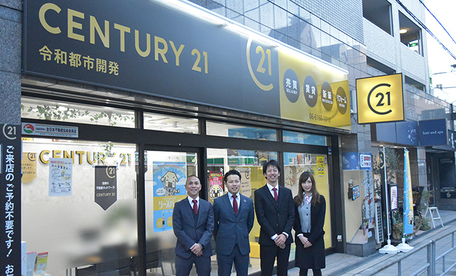
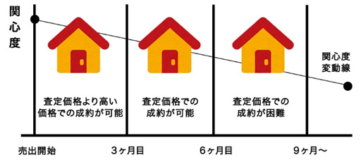
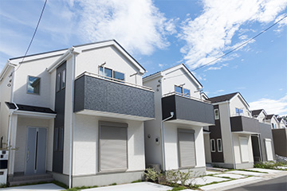

不動産売却を成功させる大切なポイント

「不動産の売買」に慣れているという方は、決して多くはないはず。不動産売却は人生において特に大きなお金が動くため、誰でも不安を抱えているものです。
こちらでは、東淀川区の不動産会社「株式会社令和都市開発」が不動産売却で成功するための考え方や、不動産会社の選び方をご紹介しています。不動産売却をお考えの方は、ぜひご参考にしてください。
家や土地を売るときにはこのような考え方をしましょう
周辺地域の相場は自分なりに把握しておくのが大切
何かを売る際は「相場」を把握しておかなければ、その売値が妥当かどうかの判断はできません。ただし、不動産は自動車などのように決まった形の商品があるわけではないため、家や土地ごとに価格は変わってきます。
それでも、エリアごとに価格帯の相場は存在するため、まずは売りたい物件を含めた周辺の相場を自分なりに調べておきましょう。相場から大きく外れると売却しにくくなってしまうため、相場を基準にする姿勢は大切です。
価格について基礎的な考え方を把握しましょう
不動産には同じものが存在しません。たとえ同じハウスメーカーが作った同系統の家でも、立地条件や周辺の環境が違えば、価格も大きく異なります。また、季節などの時期によっても相場は動くため、基準を大切にしつつ多角的に価格について考えておく必要があるでしょう。
そこで大切になるのが、不動産会社のような専門家からのアドバイスやインターネットでの検索。可能な限り、幅広いデータを収集しておきましょう。
不動産のいいところ悪いところをいえますか？
大部分の売り主様は、売りたい不動産の価格を高く見積もってしまう傾向があります。まずは売り主としてだけではなく、買い主様の立場からも考え、冷静に不動産を見つめ直してみましょう。積極的にアピールすべきポイントはもちろん、買い主様にとってはマイナスとなるようなポイントも見つかるのではないでしょうか。
特に買い物や交通などの利便性・建物の広さ・間取りなどは、より客観的に分析することで、適切な売り方も見えてくるでしょう。
買う側の気持ちも考えながら、価格を設定しましょう
どんなに魅力的な商品であっても、いつまでも売れず店頭に残っていたら「何か問題があるのでは？」というイメージを持ってしまうのではないでしょうか。不動産についても例外ではなく、買い主様の気持ちを考える必要があります。

たとえば、売れない状態のまま希望売却額を提示し続けると、「売れ残り」と判断されてしまい相場の価格でも売れなくなってしまう可能性はゼロではありません。売却の際には、スピードも意識して価格設定やアピールをする必要があります。
売却時にかかる費用や税金を知りましょう
不動産を売却する際には、販売を代行する不動産会社に「成功報酬」として仲介手数料を支払う必要があります。その他にも、税金を含めてさまざまな費用がかかるのが不動産売却の実情です。こちらでは、不動産売却の際にかかる費用や税金についてご案内します。
不動産売却にかかる費用
| 仲介手数料 | 不動産会社に販売活動を委託した場合、成約後に支払う成功報酬です。 【計算式】 |
登記費 | 住所などを公示するために必要な費用です。
|
|---|---|---|---|
| 抵当権抹消費用（該当者のみ） | 住宅ローンの抵当権を抹消するために必要な費用です。 一般的に、2万円程度が相場ですが、別途司法書士費用がかかるケースもあります。 |
ローン返済費 | 住宅ローンの完済前に売却が決まった場合は、一括返済する必要があります。 売買前に抵当権の抹消が必要になります。 |
| 証明書発行費 | 不動産の売買に関わるさまざまな契約を結ぶ際に、証明書を発行する費用です。
|
引っ越し費・処分費 | まだ住んでいる状態の住まいを売却する場合、引っ越し費用が必要です。 使用している家具や家電製品を廃棄する際には処分費もかかります。 |
不動産売却にかかる税金
| 印紙税 | 不動産の売買価格に応じて作成される文書に課税される税金です。 印紙代は、不動産売買契約書に記載された金額によって変わります。 |
登録免許税 | 不動産の所有権を移転する際の登記や、住宅ローンの抵当権設定登記をする際に必要になる税金です。 |
|---|---|---|---|
| 消費税 | 不動産売却の場合、土地は非課税なので消費税はかかりませんが、建物には消費税がかかります。 | 住民税 | 不動産の売却価格が購入時より上回った場合に発生する税金です。 購入時と売却時の差額が税金の対象になります。 |
仲介手数料とは？
不動産の売却を個人のみで行うのは困難です。そのため、売り主様が不動産会社に依頼して買い主様を探してもらうのが一般的ですが、その際に結ぶ契約を「媒介契約」と呼びます。「仲介手数料」とは、媒介契約によって買い主様が見つかった場合に、売り主様が不動産会社に支払う成功報酬のことです。
基本的に、不動産会社に支払うのは仲介手数料のみであり、価格査定などは無料で行われます。また、売却をやめた場合や買い主様が見つからなかった場合、成功報酬はなくなるため仲介手数料は発生しません。
仲介手数料には上限があります
不動産会社が受け取ることのできる仲介手数料は、宅地建物取引業法によって上限額が定められています。そのため、不動産売却の成立後に不動産会社が上限額を超える仲介手数料を請求した場合は、法令違反となるため注意しておきましょう。
| 取引額 | 報酬額（税抜き） |
|---|---|
| 200万円以下 | 取引額の5％以内 |
| 200万円以上400万円以下 | 取引額の4％以内 |
| 400万円以上 | 取引額の3％以内 |
家や土地を売るとき頼りになる不動産会社とは
査定額の根拠を説明できる不動産会社
不動産会社数社に査定を依頼すると、会社によって金額に差が出ることは多々あります。実はどの不動産会社も使用しているデータベース自体は同じなのですが、査定で重視する項目が会社ごとに異なるため、価格に差が出るのです。そのため、まずは担当者に査定額の根拠を詳しく聞いてみましょう。ちゃんと説明できるようなら、安心してお任せができます。
親身になって、一緒に考えてくれる不動産会社ですか？
売り主様にとって、不動産の売却は人生でも非常に大きな取引です。担当者の発言や提案内容から、顧客の立場を親身になって考えてくれる会社なのか、物件の資産価値や将来のことまで考えて提案してくれるのかを見極めましょう。不動産会社ごとに考え方や重視するポイントは異なりますので、不動産会社のホームページなどを確認しておく意識が大切です。

不動産会社ごとの得意分野を確認しましょう
不動産会社ごとに得手不得手はあり、賃貸物件に強い会社があれば、一戸建ての売却に強い会社もあるなど、それぞれ異なった特徴があります。まずは何を得意としているのか、過去の売却実績はどうかなどをチェックしてみてください。
担当者はパートナーとして信頼できるか確かめましょう
不動産会社の担当者は、大切な不動産を売却するための大切なパートナーです。担当者が信頼できる人物なのかどうか、まずは会って確かめましょう。「詳しく説明してくれる」「要望に応えてくれる」「宅地建物取引主任者がいる」など、チェックすべきポイントはさまざまです。
Pick UP!リースバックをご存知ですか？
リースバックとは、お客様が所有する不動産を売却後の所有主と賃貸契約を結ぶことで引き続きその不動産をご利用いただける仕組みです。現在お住まいの住宅も、リースバックを活用することで住宅売却後もそのままお住みいただくことが出来ます。